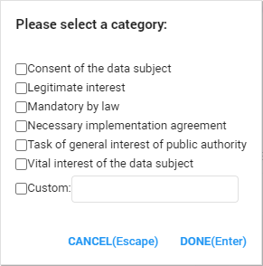

After encountering a document with personal data and tagging it with the Personal data tag, and deciding that it is of importance to store this document without anonymizing or pseudonymizing it, you need a Purpose of processing. The Purpose of processing is the legal ground on which the processing of personal data is based.
These legal grounds can be found in Article 6 of the GDPR. After selecting the Purpose tag, the following subtags will appear:

In order to store documents with personal data inside, without having to anonymize the personal data, at least one of the legal requirements must be met. If at least one of the previous subtags is applicable in the situation, the documents with the personal data can be stored in accordance with the GDPR. However, if no legal ground is applicable, the documents cannot be stored without having to anonymize the personal data.